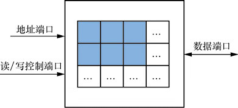

首页 > 编程笔记
寄存器（Register）是什么？
现代高性能 CPU 中几十个寄存器也就够用了。
寄存器（Register）是 CPU 中用于存储数据的单元。在运算器、控制器中，都需要有记忆功能的单元来保存从存储器中读取的数据，以及保存运算器生成的数据，这样的单元就是寄存器。
这一系列单元使用“寄存器”的名称主要是为了和存储器（Memory）相区分。两者都有记忆功能，区别在于：
存储器的容量要远远大于寄存器。存储器保存了程序的输入数据和最终结果，而寄存器保存的是计算过程中的中间数据，更具有“瞬时性”。
寄存器有以下种类。
寄存器的一个重要概念是“位宽”，即一个寄存器包含的二进制位的个数。通常所说的“CPU是多少位”也就是指 CPU 中寄存器的位宽。
更大的位宽意味着计算机能表示的数据范围更大、计算能力更强，但也增加了 CPU 的设计和实现成本。历史上的 CPU 从 8 位、16 位发展而来，现在的计算机绝大多数采用 32 位或 64 位的 CPU。
64 位 CPU 已经满足绝大多数现实生活中的信息处理需求，主流台式计算机、服务器暂时没有 128 位 CPU 的实际需求。龙芯1号都是 32 位的，龙芯2号、3号都是 64 位的。
CPU 中经常将一组寄存器单元使用一个模块来实现，形成寄存器堆。寄存器堆的典型结构包含3个端口：
寄存器（Register）是 CPU 中用于存储数据的单元。在运算器、控制器中，都需要有记忆功能的单元来保存从存储器中读取的数据，以及保存运算器生成的数据，这样的单元就是寄存器。
这一系列单元使用“寄存器”的名称主要是为了和存储器（Memory）相区分。两者都有记忆功能，区别在于：
- 存储器是位于 CPU 外部的独立模块；
- 而寄存器是位于 CPU 内部的单元。
存储器的容量要远远大于寄存器。存储器保存了程序的输入数据和最终结果，而寄存器保存的是计算过程中的中间数据，更具有“瞬时性”。
寄存器有以下种类。
1) 数据寄存器
用于保存从存储器中读取的数据，以及运算器生成的结果。针对不同的数据类型，又可以分为整数寄存器、浮点寄存器。2) 指令寄存器
用于保存从存储器中读取的指令，指令在执行之前先暂时存放在指令寄存器中。3) 地址寄存器
用于保存要访问内存的地址。它也分为两种：- 一种用于保存 CPU 下一条要执行的指令地址，这种寄存器又称为程序地址计数器（Program Counter，PC）；
- 另一种用于保存指令要访问的内存数据的地址。
4) 标志位寄存器
用于保存指令执行结果的一些特征，例如一条加法指令执行后，结果是否为 0、是否溢出（Overflow，即超出数据寄存器的最大位宽）等。这些特征在标志位寄存器中以特定的位进行表示，可以供程序对计算结果进行判断。寄存器的一个重要概念是“位宽”，即一个寄存器包含的二进制位的个数。通常所说的“CPU是多少位”也就是指 CPU 中寄存器的位宽。
更大的位宽意味着计算机能表示的数据范围更大、计算能力更强，但也增加了 CPU 的设计和实现成本。历史上的 CPU 从 8 位、16 位发展而来，现在的计算机绝大多数采用 32 位或 64 位的 CPU。
64 位 CPU 已经满足绝大多数现实生活中的信息处理需求，主流台式计算机、服务器暂时没有 128 位 CPU 的实际需求。龙芯1号都是 32 位的，龙芯2号、3号都是 64 位的。
CPU 中经常将一组寄存器单元使用一个模块来实现，形成寄存器堆。寄存器堆的典型结构包含3个端口：
- 一个是地址端口（用来选择要读写的寄存器编号）；
- 一个是读/写控制端口（控制是向寄存器单元写入还是从寄存器单元读出）；
- 一个是数据端口（从寄存器单元读出或向寄存器单元写入的数据）。

图1：寄存器堆的典型结构
图1：寄存器堆的典型结构
关注公众号「站长严长生」，在手机上阅读所有教程，随时随地都能学习。内含一款搜索神器，免费下载全网书籍和视频。

微信扫码关注公众号